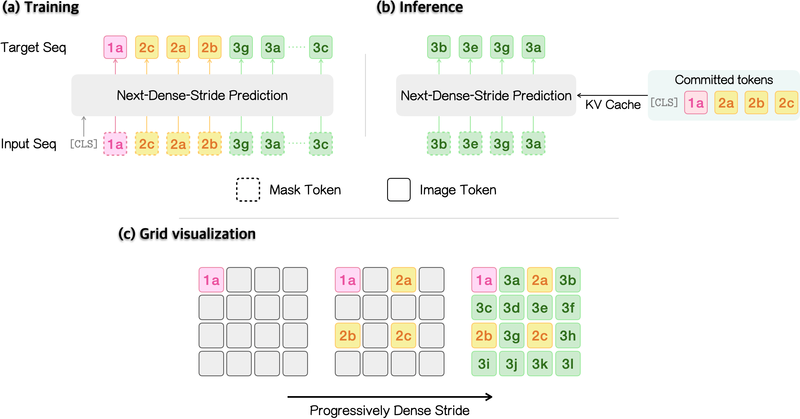
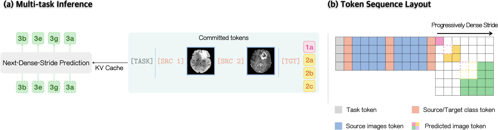
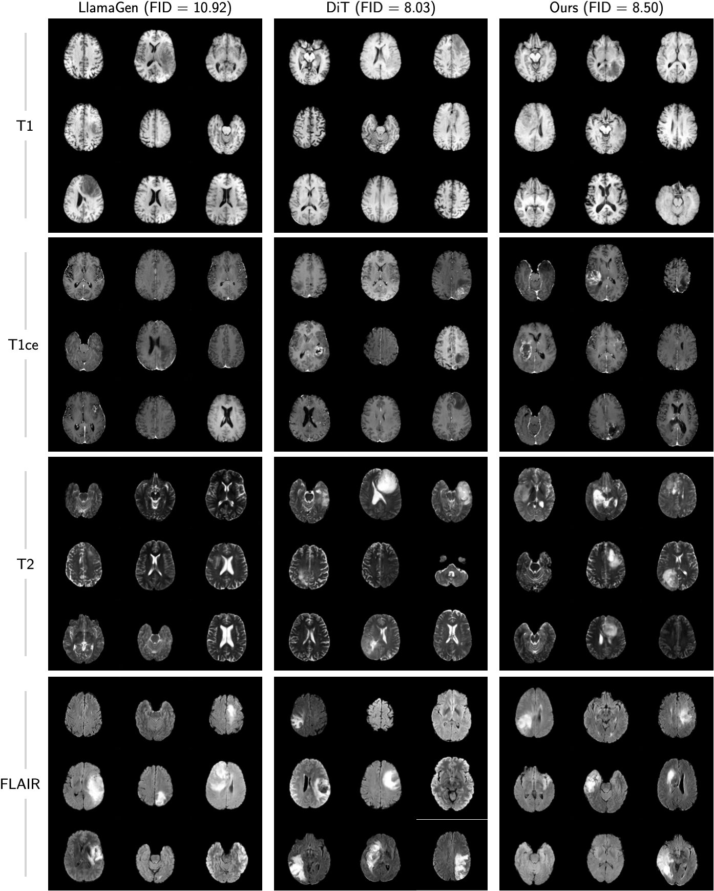
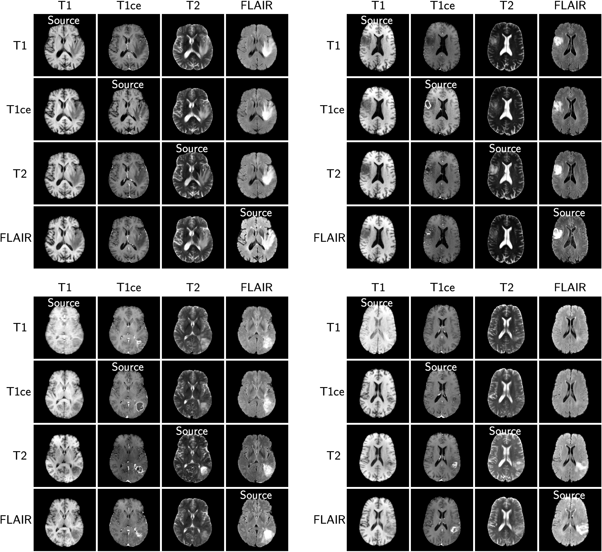
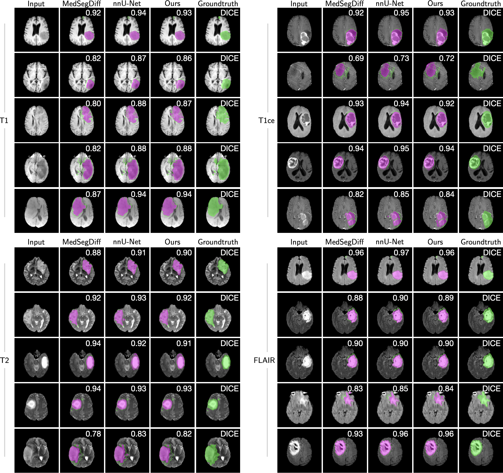
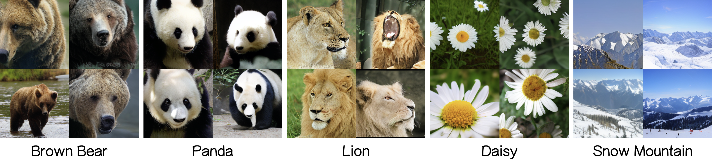

We introduce DenseAR, which reformulates autoregressive image generation as coarse-to-fine next-dense-stride prediction on a compact single-scale latent grid.
Traversing the grid with progressively denser strides captures the transition from global structure to fine detail — avoiding both the slow inference of raster-order autoregression (DenseAR decodes multiple tokens in parallel) and the long multi-resolution sequences of multi-scale approaches.
On brain MRI, a single DenseAR model unifies cross-modal translation, modality-conditioned generation, and tumor segmentation. On natural images, DenseAR improves class-conditional ImageNet generation over single-grid and multi-scale-tokenizer baselines.
Next-dense-stride prediction: coarse-to-fine generation on a compact single-scale latent grid.
Parallel decoding: emits multiple tokens per step, avoiding slow raster-order autoregression.
No sequence inflation: none of the long multi-resolution token sequences that multi-scale (VAR) models rely on.
One model, many tasks: MRI cross-modal translation, modality-conditioned generation, and tumor segmentation.
Competitive: competitive with task-specific methods on brain MRI, and better class-conditional ImageNet (FID/IS) than single-grid and multi-scale baselines.
DenseAR encodes an image into a single-scale grid of latent tokens and then visits those tokens in stride order: a sparse set first, followed by progressively denser strides that fill in the gaps. At each step, the model predicts multiple tokens in the current stride group in parallel.

DenseAR keeps the standard autoregressive likelihood, but trains over a randomly sampled stride order rather than a fixed raster path. Tokens within each stride stage are shuffled, so the model learns to predict any position in the next, denser stage from any coarser context — and never sees a sequence longer than the single G×G grid.
At test time DenseAR walks the same coarse-to-fine order. A full grid is produced in a handful of parallel steps instead of hundreds of raster steps — the random within-stage training is exactly what makes this grouping safe.
Because DenseAR is autoregressive, every task is just one token sequence assembled from a few special markers — so a shared backbone covers generation, translation, and segmentation without task-specific heads. A [TASK] marker selects the task, a class token precedes each image to name its modality/class, source images are appended as [SRC] blocks, and a [TGT] marker requests the desired output.

A single DenseAR model handles three multi-contrast brain-MRI tasks — generation, translation, and segmentation — within one backbone, with no task-specific retraining. Evaluated on BraTS-2023 against strong specialists and unified baselines.
| Method | Translation | Generation | Segmentation | ||
|---|---|---|---|---|---|
| PSNR↑ | SSIM↑ | LPIPS↓ | FID↓ | Dice↑ | |
| Generalists | |||||
| EditAR | 20.78 | 0.811 | 0.112 | 15.88 | – |
| MVG | 20.46 | 0.825 | 0.114 | – | 0.872 |
| DenseAR (Ours) | 21.83 | 0.833 | 0.099 | 9.41 | 0.851 |
Given a target contrast, DenseAR synthesizes realistic T1, T1ce, T2, and FLAIR scans, with FID competitive with strong generative baselines (LlamaGen, DiT).

From any single input contrast, DenseAR translates to every other contrast, preserving anatomy and lesions across modalities.

The same model segments tumors from any contrast, reaching Dice scores on par with specialized methods (MedSegDiff, nnU-Net).

Class-conditional samples generated by DenseAR across diverse categories, improving over single-grid and multi-scale-tokenizer baselines.

@article{park2026DenseAR,
title = {Next-Dense-Stride Prediction for Multimodal Autoregressive Visual Modeling},
author = {Park, Chicago Y. and Mao, Jialin and Xu, Xiaojian and Kass-Hout, Taha and Kamilov, Ulugbek S. and Xiao, Cao},
journal = {arXiv:2607.09892},
year = {2026}
}